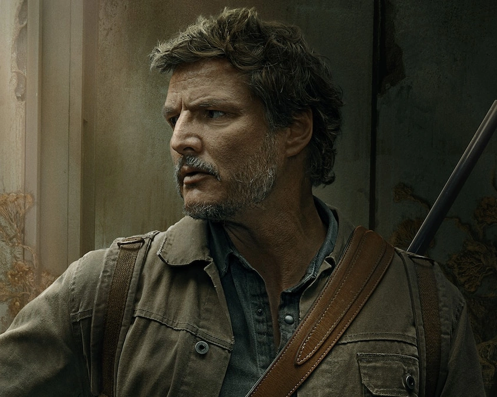
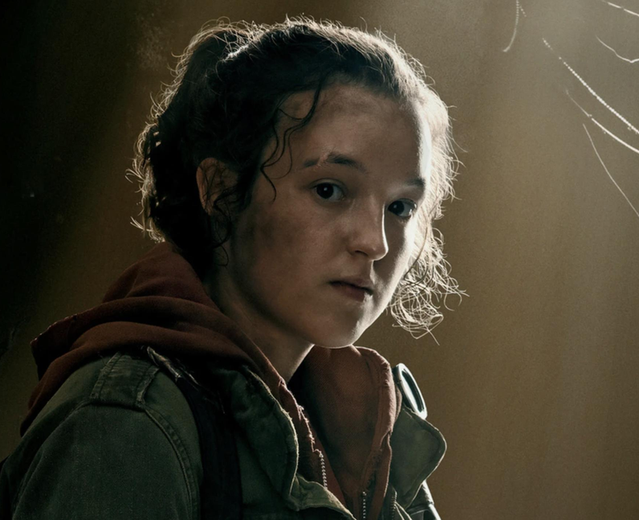
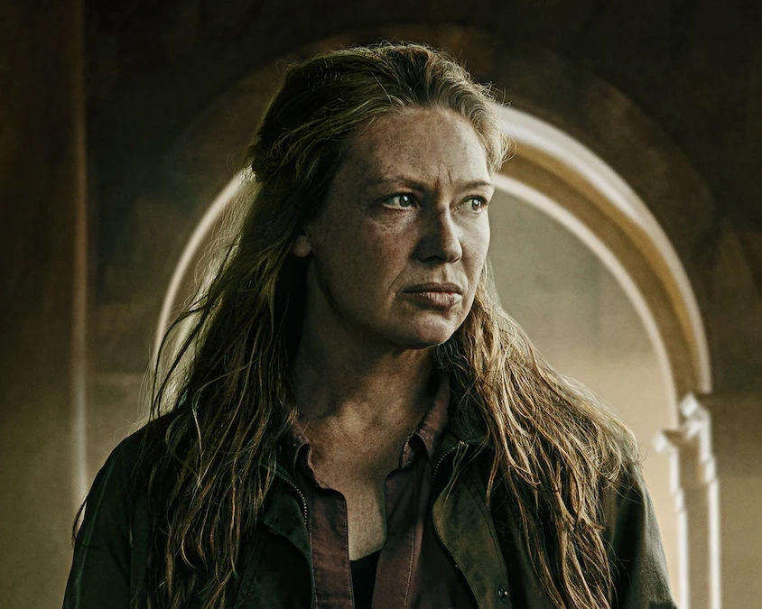
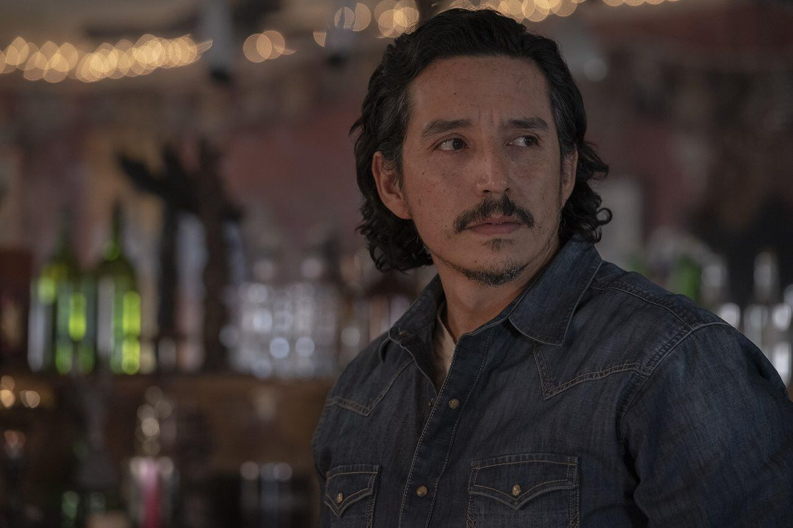
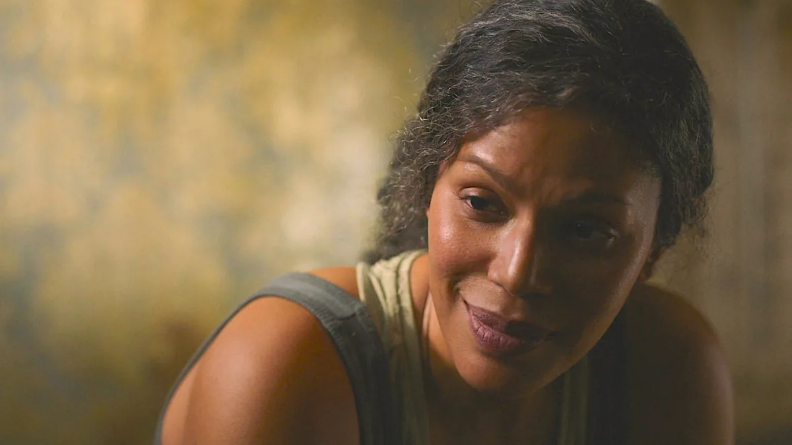

Elenco y Personajes

Pedro Pascal como Joel Miller
Joel es un sobreviviente endurecido por la pérdida de su hija al inicio de la pandemia. Se convierte en el protector de Ellie durante su viaje por un Estados Unidos devastado. Su evolución emocional y su vínculo con Ellie son el corazón de la historia.

Bella Ramsey como Ellie Williams
Ellie es una adolescente de 14 años que es inmune al hongo que ha destruido el mundo. Su inmunidad la convierte en la esperanza para encontrar una cura, y su relación con Joel crece de forma profunda a lo largo de la serie.

Anna Torv como Tess
Tess es la compañera de Joel en los primeros episodios. Fuerte, decidida y valiente, es clave en el inicio del viaje para llevar a Ellie con los Luciérnagas (grupo rebelde que busca una cura).

Gabriel Luna como Tommy Miller
Tommy es el hermano menor de Joel. Ex soldado, idealista y con un gran sentido de justicia, representa una parte del pasado y la esperanza del protagonista.

Merle Dandridge como Marlene
Líder de los Luciérnagas. Es la única que conoce el secreto de Ellie desde el inicio y está dispuesta a todo por encontrar una cura para la humanidad.

Nico Parker como Sarah Miller
Sarah es la hija de Joel. Su historia se desarrolla en el primer episodio y es fundamental para entender la transformación emocional de Joel.